0. 摘要
一句话：这是一块三层铜叠合的冲击射流冷板——底板承热并布短槽，中间板钻 128 个微射流孔，顶板是被铜肋一分为二的静压箱。 冷却液从顶板一侧进、经静压箱稳压分流、由 128 个孔向下喷射冲击底板承热面，废液就近进入短槽带走， 再统一上抽进整板回流层，最后从顶板另一侧流出。板内没有建流体实体，铜与铜之间的空腔就是流体域。
asm_0921.stp 为准。
文件由 Siemens PLM Software NX 12.0 导出（ST-Developer v16.7，AP203，单位毫米），
装配名 asm2，三个组件 plate / cover1 / cover2。
AP203 不携带材料与公差标注，因此材质一节是工程推荐，不是文件里读出来的属性，已单独标注。1. 整体尺寸与零件构成
整体外形 95 × 75 × 12.5 mm（长 × 宽 × 总厚），这是本报告唯一给出的尺寸口径。 三个零件沿厚度方向自下而上叠合，外轮廓齐平，装配后包围盒与外形一致，无任何零件凸出。
| 序 | 零件名 | 功能定位 | 在厚度方向的位置 | 铜体积 / 估重 |
|---|---|---|---|---|
| 1 | PLATE | 换热底板。贴芯片的一面承热，另一面布短槽与细肋，是唯一与热源接触的零件 | 最下层 | 22 875 mm³ / 约 205 g |
| 2 | COVER1 | 喷嘴板。128 个微射流孔在此，兼作射流腔与回流腔的分隔件 | 中间层，与 PLATE 互锁交叠 | 15 184 mm³ / 约 136 g |
| 3 | COVER2 | 静压箱盖。内含被铜肋隔断的进、出液两腔，进出液口开在其侧壁 | 最上层 | 24 350 mm³ / 约 218 g |
铜合计 62 409 mm³（约 559 g，按紫铜 8.96 g/cm³）。外形包络 89 063 mm³，铜占 70.1%， 其余 26 653 mm³（约 26.7 mL）即板内空腔。PLATE 与 COVER1 在厚度方向有一段交叠区， 但两者体积相交为 0.000 mm³——说明是无干涉互锁（立壁与下裙相互插入），装配建模是干净的。
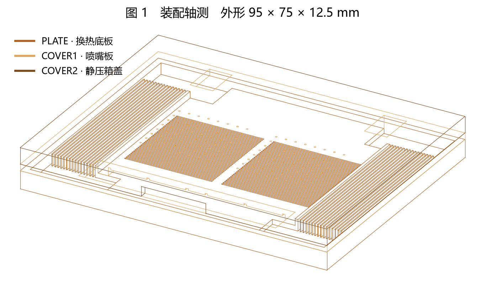
图 1 · 装配轴测（线框，可透视内部） 三件叠合后的外形。这是去隐藏线的线框投影而非实体渲染， 上盖不遮挡下层，因此能同时看到底板的槽与肋——这是有意的，便于一张图看清三层的相对关系。 三个零件用同色系不同明度区分，不表示不同材料——它们都是铜。
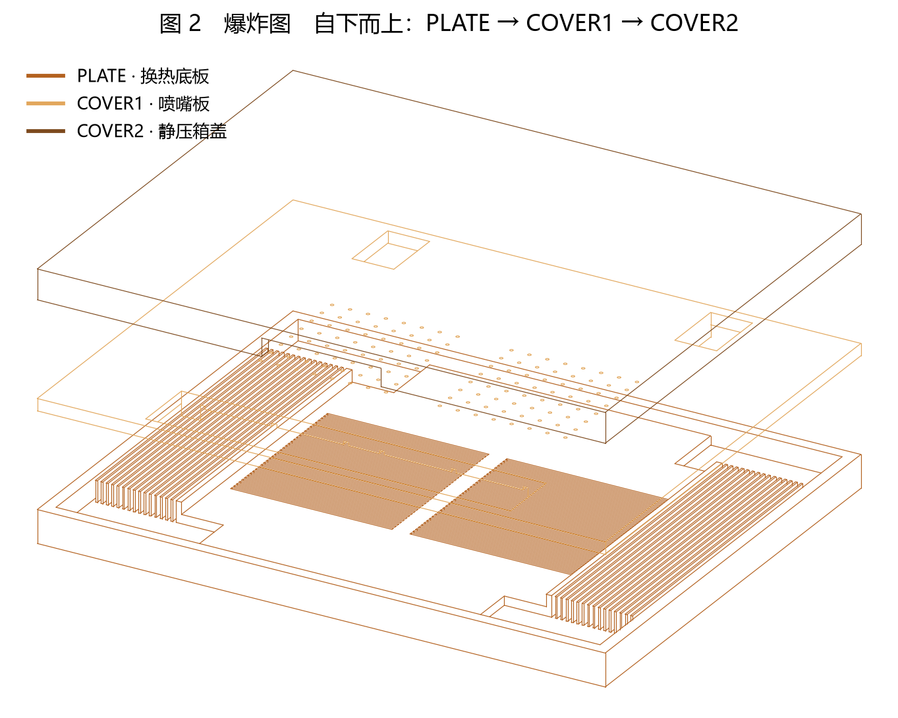
图 2 · 爆炸图 沿厚度方向拉开。一眼能看出三层的分工： 底层 PLATE 中间是两片密集短槽带、两侧是细肋带；中层 COVER1 上是两片点阵（128 个微射流孔）加三处窗口； 顶层 COVER2 基本是一块挖了腔的盖板。
2. 材质
asm_0921.stp 是 AP203 格式，不携带材料属性；
文件里只有一条颜色定义（橙色）挂在三个实体上，那是显示颜色，不是材质。
因此下表是基于结构功能与本项目既有设计口径给出的推荐材质，需由设计方在图纸上正式冻结。| 零件 | 推荐材质 | 理由 | 关键要求 |
|---|---|---|---|
| PLATE | 紫铜 C11000 / TU1（无氧或低氧紫铜） | 唯一承热件，导热率决定扩热能力；短槽与细肋极薄，需要良好塑性与切削性，不能用易脆的高强铜合金 | 导热优先，含氧量低以免钎焊时产生氢脆与气孔；贴芯片面需平面度与低粗糙度 |
| COVER1 | 紫铜 C11000 / TU1 | 与底板同材可避免异种金属电偶腐蚀与热膨胀失配；微孔加工要求材料组织均匀、无夹杂，否则小径钻头易偏易断 | 板材组织均匀；孔壁无重铸层与毛刺（直接影响射流品质与颗粒脱落） |
| COVER2 | 紫铜 C11000 / TU1 | 不承热，本可用不锈钢或铝以省成本，但与铜接触会带来电偶腐蚀与焊接不兼容；统一用铜换取一次钎焊成形 | 承压件，需保证腔壁与隔腔肋的强度；侧口需与外部快接接口匹配 |
| 接合材料 | 视装配方案：真空钎焊用银基或铜磷钎料；扩散焊无中间层；螺接用氟橡胶 / EPDM 密封圈 | 见第 6 节方案对比 | 钎料不得流入窄槽；弹性体需与工质和工作温度兼容 |
| TIM | 本文件未建模 | PLATE 底面存在一圈浅腔（两处对应计算 die、八处对应 HBM），是给 TIM 与器件让位用的，但 TIM 本身不是这个装配里的零件 | TIM 牌号与厚度由热设计另行冻结 |
3. 结构特征
三层各司其职：PLATE 管换热与承热，COVER1 管配液与喷射，COVER2 管稳压与进出。 关键设计手法是分区——中间给两颗计算 die 做射流强化，两侧给 HBM 做低速平流，中间用铜肋做真正的水力隔墙。
3.1 PLATE · 换热底板
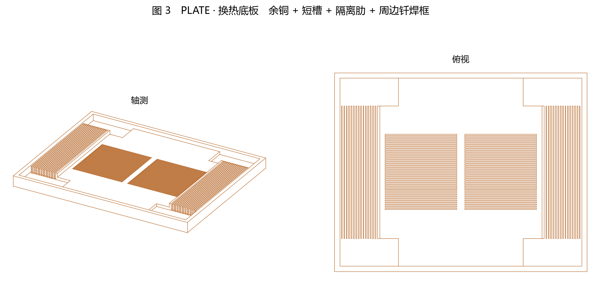
图 3 · PLATE 左轴测、右俯视。注意三种完全不同的表面纹理：中间两片横向密集短槽、 两侧两片纵向细肋、最外圈周边实体框。
- 底面（贴芯片面）是整块实体铜，只在器件投影位置下沉出很浅的一圈平底浅腔：两处大的对应两颗计算 die，八处小的对应两列各四颗 HBM。这些浅腔是 TIM 与器件的让位和定位面，不是流道，与板内水路完全不通。
- 承热面之上是一层实体余铜，作用是把 die 局部高热流在横向摊开（spreading）再交给流体，同时提供刚度并防止加工穿透。这层厚度是热阻与刚度的直接杠杆。
- 中间是两片密集短槽带，槽沿板的长边方向（X）走，共 72 条、分两组分别落在两颗 die 的投影内。槽很窄很浅，作用不是当长流道，而是让冲击后的废液就近离开驻点，避免上游废液横扫下游射流把驻点吹歪。
- 两侧是两片纵向细肋带，肋沿板的短边方向（Y）走，共 30 条，位置正对两列 HBM。这里没有射流，靠的是增大湿润面积 + 低速平流，既盖住 HBM 又不冲蚀焊球。
- GPU 区与 HBM 区之间各有一道独立隔离肋，从槽底一直立到与上盖贴合的高度，把中间射流区的横流彻底切断，不让高速流窜到 HBM 侧。它同时是抗弯筋，压装时把载荷从中间传到边框，减轻 HBM 焊球偏载。
- 最外圈是一整圈实体周边框，是接合面（钎焊/扩散焊的焊缝带，或螺接方案的密封槽所在），同时封住整个水腔的外缘。
3.2 COVER1 · 喷嘴板
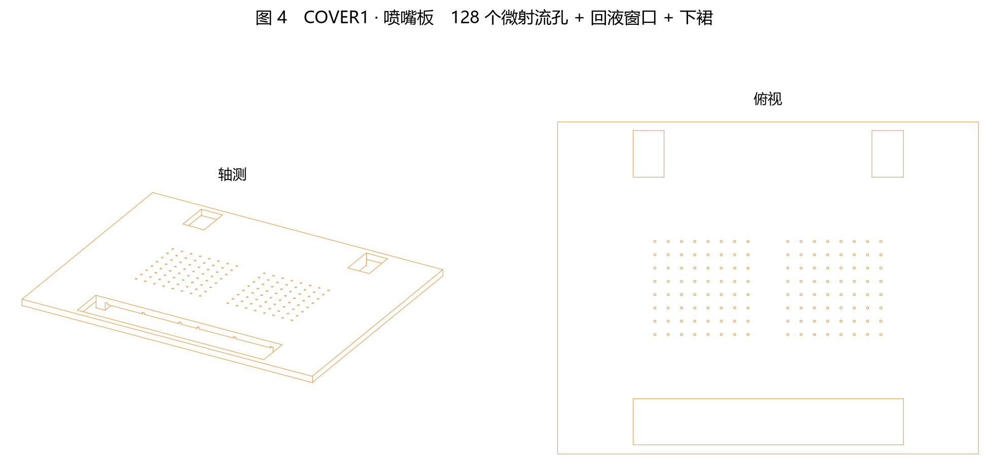
图 4 · COVER1 左轴测、右俯视。两片点阵是 128 个微射流孔； 俯视图下方那个长条大窗是回液窗口；上方两个小方窗是给 HBM 侧腔旁路供液的角窗。
- 128 个微射流孔，分成两片规则方阵、每片 64 孔（8 × 8），分别对准两颗计算 die 的投影中心。孔是直圆柱通孔，贯穿喷嘴板的实体段，孔长即该段厚度——这段长度决定射流出口的整流程度。
- 一个大回液窗口，开在板的一侧（靠出液端），面积远大于 128 个孔的总面积之和。它是废液上抽的唯一主通道，把下方整板回流层接到顶板的出液腔。
- 两个角窗，开在板的另一侧（靠进液端）左右两角，直接把进液静压箱与左右两条 HBM 侧腔连通。这是刻意做的旁路：HBM 热流比 die 低一个量级，不需要射流，多送水只会抬压降和冲蚀。
- 一圈下裙，从板体向下伸出，围住中间的射流区。它与 PLATE 的立壁互锁，把射流腔与回流腔在侧向隔开，迫使废液只能先进短槽、再从两侧进入回流层，而不是在射流腔里原地打转。
- HBM 侧不开任何喷嘴孔——这是设计意图，不是漏画。
3.3 COVER2 · 静压箱盖
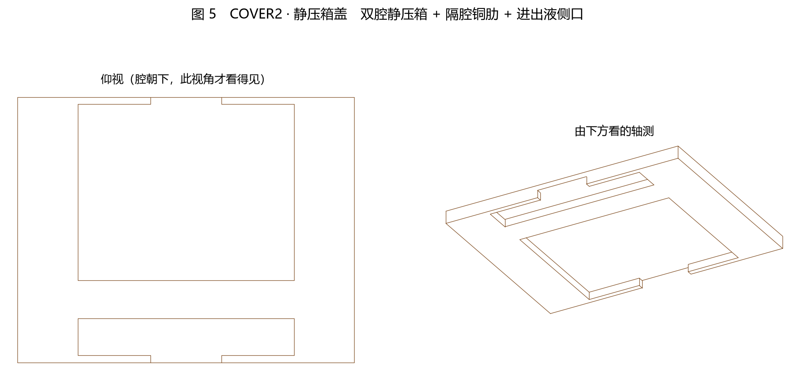
图 5 · COVER2 左轴测、右俯视。结构最简单的一件，但功能关键：它把"进"和"出"在同一层里分开。
- 一块挖腔的盖板，腔开在朝下的一面，上表面是完整平面（对外是安装面）。
- 腔被一道实体铜肋一分为二：一个大腔占据大部分面积，是进液静压箱，正好覆盖住下方 128 个喷嘴孔的全部范围；一个小腔在另一端，是出液汇集腔，正好覆盖住下方的回液窗口。中间那道铜肋是两腔之间的死隔断，这是防止进液直接短路到出液的唯一屏障。
- 进、出液口开在盖板的两个相对侧壁上，都是矩形口，高度与腔等高。进液口通大腔、出液口通小腔，两者在板的两端，形成对穿的总流向。
- 静压箱的作用是先稳压再分配：腔的流通面积远大于 128 个孔的总面积，流速在腔里降下来、静压拉平，128 个孔才可能拿到接近一致的压差，从而流量分配均匀。腔做小了，靠近进液口的孔会抢水。
3.4 喷嘴与短槽在厚度方向的关系
前面几张图都是从上往下看，而这块板的厚度只有外形长边的八分之一，z 向细节在俯视和轴测里必然被压扁。 喷嘴孔、喷距间隙、短槽这三者恰恰是沿厚度方向依次排布的，所以这里单独用剖面来看。
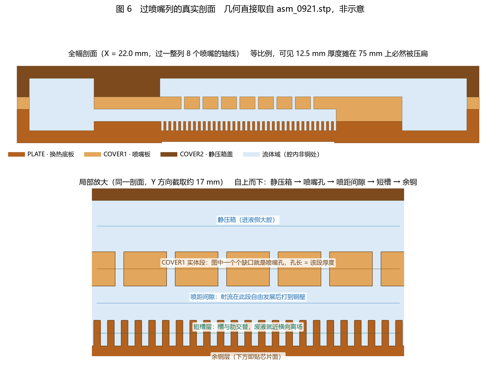
图 6 · 过喷嘴列的真实剖面 剖切面过一整列 8 个喷嘴的轴线，几何直接取自 asm_0921.stp，不是示意图。
上幅等比例全宽，可以直观看到厚度被压扁的程度；下幅是同一剖面沿 Y 截取一小段的放大。
浅蓝是流体域（腔内非铜处），COVER1 那条带上一个个缺口就是喷嘴孔。
从这张剖面能读出的四件事
- 喷嘴不是"薄板上的针孔"，而是一段有长度的孔道。孔贯穿 COVER1 的实体段，孔长等于该段厚度。这段长度决定射流出口前被整流到什么程度——太短则射流发散、驻点糊掉；太长则摩擦损失和堵塞风险上升。
- 喷嘴出口与铜壁之间有一段明确的自由空间，也就是喷距间隙。射流在这段里自由发展，然后才打到底板。这段高度与孔径的比值是冲击换热最敏感的参数之一：过小则射流还没成形就撞壁、并且回流无处可走；过大则射流已经衰减、驻点换热系数掉下来。
- 短槽在喷嘴的正下方、且比喷嘴密得多。剖面上槽与肋交替成梳齿状，一个喷嘴的覆盖范围内会跨过好几条槽。这正是设计意图：射流打下来转成壁面射流后，无论朝哪个方向刮，都能在很短距离内找到一条槽把自己带走。
- 槽底之下还有一层完整的余铜。槽没有铣穿，热流是从下方的贴芯片面进来、先在这层余铜里横向摊开，再由肋壁和槽底交给流体。这层厚度是"扩热能力"与"防铣穿 / 刚度"之间的折中。
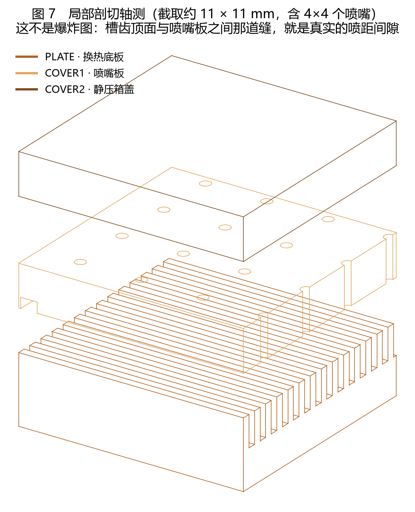
图 7 · 局部剖切轴测 从装配体上切出约 11 × 11 mm 的一小块，含 4×4 个喷嘴，用三维看对位关系。 这不是爆炸图——槽齿顶面与喷嘴板之间那道缝就是真实存在的喷距间隙，两者本来就不接触。 可以看到喷嘴孔（喷嘴板上的小圆）落在槽齿带的正上方，而不是对着某一条槽或某一道肋。
4. 流体流通路径
板内没有流体实体零件，三块铜之间的空腔就是流体域（约 26.7 mL）。 这个空腔是单一连通的：从进液口一路到出液口全程贯通，中途只被 COVER2 的隔腔铜肋分成"进"和"出"两侧， 其余全部靠层与层之间的窗口相连。下面按水走的顺序说。
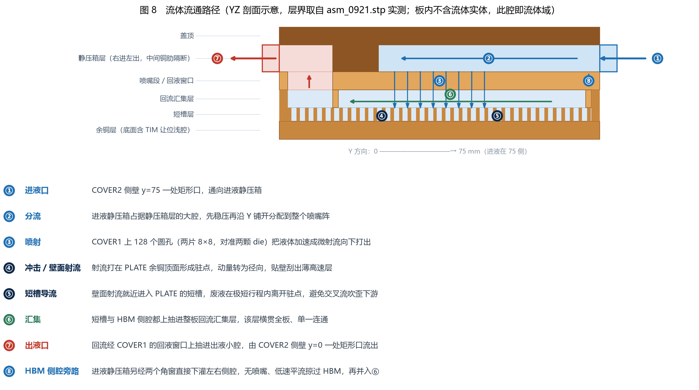
图 8 · 流体流通路径 厚度方向剖面示意，层界取自 asm_0921.stp 实测。
橙色为铜，浅蓝为进液侧流体，浅粉为出液侧流体，绿箭为汇集流向。图中编号与下文一一对应。
4.1 进入与分流
冷却液从 COVER2 一侧侧壁的矩形口进入，直接落进进液静压箱（COVER2 下腔中较大的那一个）。 静压箱的流通截面比 128 个孔的总面积大两个数量级，液体进腔后立刻减速、静压拉平，然后沿板的长度方向铺开， 覆盖住下方两片喷嘴阵的全部范围。这一段的任务只有一件事：让 128 个孔看到尽可能一致的上游压力。
4.2 喷射与冲击
液体从静压箱向下穿过 COVER1 上的 128 个微射流孔。孔口是整条水路上最小的流通截面， 也就是主要的限流元件，流速在此被抬到最高，形成自由射流向下冲出。
射流穿过喷嘴出口与底板之间的间隙，垂直撞击 PLATE 的承热面。撞击点（驻点）处边界层被压到最薄， 局部换热系数达到整块板的最高值。随后动量由轴向转为径向，液体贴着铜壁向四周刮出，这层薄而快的流动才是"壁面射流"， 它是本方案换热的主力——真正带走热量的不是还在往下冲的那股，也不是槽底深处的慢流。
4.3 短槽就地导流
壁面射流向外刮出后，就近落进 PLATE 的短槽，沿槽横向走出 die 区。 这里的设计要点是"短"：如果改成一条贯穿整颗 die 的长槽，下游射流看到的将是上游已经吸过热的废液， 横流会把驻点核推离孔轴，die 内部温差和两 die 之间的温差会同时恶化。 短槽把"一条河"拆成许多段小循环，每股流体在很短的行程内就离开驻点区。
4.4 HBM 侧腔旁路
与此并行的是第二条路：进液静压箱的液体另经 COVER1 靠进液端的两个角窗直接下灌左右两条 HBM 侧腔， 沿板的短边方向从进液端流向出液端，掠过两列 HBM，靠细肋增大湿润面积换热。 这一路没有喷嘴，流速被刻意压低——HBM 热流比计算 die 低一个量级，它需要的是"盖得住、温度均匀、不冲蚀"， 而不是高换热系数。多送水只会白抬压降并带来焊球冲蚀与振动风险。两区之间由 PLATE 的隔离肋隔断，互不串流。
4.5 汇集与流出
GPU 区的短槽出流与 HBM 侧腔的平流，最终都上抬进入同一层"整板回流汇集层"。 这一层横贯全板、单一连通，是唯一的公共集液空间，所有热流在这里混合。
汇集后的废液沿板长方向流向出液端，从 COVER1 的大回液窗口整片上抽， 进入 COVER2 的出液汇集腔（下腔中较小的那一个），最后由盖板另一侧侧壁的矩形口流出。 进、出液腔之间那道实体铜肋是防止短路的唯一屏障，它的密封完整性直接决定这块板是否有效。
5. 推荐加工工艺
三个零件的加工难点完全不同：PLATE 难在"又窄又密又薄"的槽与肋，COVER1 难在 128 个小径深孔，COVER2 难在去除量大。 下面按零件给方案，每个方案都列优势与劣势。
5.1 PLATE · 换热底板
| 方案 | 优势 | 劣势 | 适用 |
|---|---|---|---|
| A. CNC 铣削 推荐基线 |
优 一次装夹即可把短槽、细肋、隔离肋、周边框、底面浅腔全部做出，本件的分区异形结构只有它能一气做完； 尺寸一致性与可追溯性好；改型只改程序，送样迭代快；用轧制/锻造紫铜，导热率与致密度确定 |
劣 窄槽需小径长刃刀具，刚性差、易断刀、单件工时长； 细肋在切削力下易让刀与变形，肋顶可能倒齿； 批量单价高，材料去除量大 |
送样与小批量的首选 |
| B. 铲齿（Skiving） | 优 单刀连续铲出高密度薄齿，齿可做得比铣削更薄更密；齿与基板一体成形，齿根无接合界面、无接触热阻；效率高、批量成本低 | 劣 只能做等距平行直齿，做不出本件"中间短槽 + 两侧细肋 + 隔离肋 + 周边框"的分区布局；改齿距需换刀具与工装；齿顶质量与直线度需专机保证 | 可与 A 复合：侧区细肋带用铲齿，其余用 CNC |
| C. 薄片蚀刻 / 冲压叠层 + 扩散焊 | 优 窄槽与异形流道自由度最高，肋可做到很薄；无切削力、无让刀变形；批量单价低 | 劣 层间对位精度要求苛刻，错位直接堵流道；必须配扩散焊设备；层间界面成为可靠性与热阻的新风险点；试制周期长、改型代价大 | 大批量且流道进一步复杂化时的备选 |
| D. 金属 3D 打印（SLM 紫铜） | 优 流道几何自由度最高，理论上可把三层合成一体、省掉全部接合面 | 劣 纯铜对激光反射率高，致密度与导热率难达锻件水平；内表面粗糙，抬压降且有颗粒脱落堵孔风险；内腔支撑难去除；成本高、一致性差 | 仅作验证件，不作出货基线 |
5.2 COVER1 · 喷嘴板
| 方案 | 优势 | 劣势 | 适用 |
|---|---|---|---|
| A. 机械微钻 推荐基线 |
优 孔形圆整、孔壁光洁、无热影响区与重铸层；孔径一致性可控且可用塞规直接检；设备门槛低、返修容易 | 劣 128 孔逐个钻，效率低；小径钻头刚性差易断，需严格的断屑、排屑与冷却策略；深径比受限，孔太深会走偏 | 射流品质优先，首选 |
| B. 激光钻孔 | 优 效率远高于机械钻、无刀具磨损与断刀；可做更小孔径；易实现阵列自动化 | 劣 铜对常规波长反射率高，需短脉冲或绿光光源；孔存在锥度（进出口径不等，影响射流一致性）；有重铸层与热影响区，孔口毛刺必须后处理，否则脱落物堵孔 | 批量化时的主力备选，须先做孔形与锥度验证 |
| C. 光化学蚀刻 | 优 一次成形全部孔、无机械应力与变形；适合薄板大批量；单价低 | 劣 各向同性蚀刻使孔呈腰鼓形而非直圆柱，射流出口条件变差；深径比能力弱，孔段偏厚时根本做不出直孔 | 仅当喷嘴段做成独立薄片时可考虑 |
| D. 电火花 / 电解加工 | 优 无切削力、孔形可控、可加工高深径比 | 劣 效率低（128 孔不经济）；电极损耗带来孔径漂移；表面有重铸层需去除 | 特殊孔型或救急返修 |
回液窗口、两个角窗与下裙均为常规铣削特征，用 CNC 与孔加工分工序完成即可。 下裙与 PLATE 立壁互锁，其侧面位置精度需与孔阵位置一起纳入同一基准。
5.3 COVER2 · 静压箱盖
| 方案 | 优势 | 劣势 | 适用 |
|---|---|---|---|
| A. CNC 铣削 推荐基线 |
优 腔形简单规整，一次装夹即可完成双腔、隔腔肋与两侧进出口；无需模具，改型自由 | 劣 这一件要挖掉的铜最多，材料利用率低，料费与工时都压在去除量上 | 送样与中小批量 |
| B. 锻造 / 挤压近净成形 + 精铣 | 优 大幅省料、显著降低单件工时；锻造纤维组织使承压能力更好 | 劣 需开模具，前期投入与周期长；起量才经济；仍需精铣密封面与进出口 | 量产阶段切换 |
| C. 钣金折弯 / 冲压焊接壳体 | 优 最省料、最轻、单价最低 | 劣 隔腔铜肋难以用钣金实现且难保证密封；壳体刚度不足，压装与承压下会鼓胀，破坏静压箱的稳压作用 | 不推荐 |
6. 推荐装配方式
这块板要把三层铜连成一个能承压、不内漏、不串流的整体。 难点不在外圈——外圈好封；难点在内部隔断：COVER2 的隔腔铜肋和 COVER1 的下裙必须同时贴合到位， 否则进液会绕过喷嘴直接短路到出液侧。凡是只能封周边的工艺，都无法单独满足本结构。
| 方案 | 优势 | 劣势 | 能否封内部隔断 |
|---|---|---|---|
| A. 真空钎焊 量产推荐 |
优 一炉把全部接合面（含内部隔腔肋与下裙）一次焊成；接头强度与密封性好、耐压耐温；焊缝导热良好，不在热路上添阻；可批量炉次生产，单件成本低；工艺成熟、供应链广 | 劣 钎料可能被毛细作用吸进窄槽造成堵塞，这是本结构最大的工艺风险，必须设阻流槽并严格控制钎料量与铺放方向； 高温使紫铜退火变软，压装下平面度保持能力下降； 整体热变形需焊后精铣接触面来纠正； 需要专用工装保证三层在升温过程中不移位；焊后不可拆，内部无法返修 |
可以（全部） |
| B. 扩散焊 | 优 无钎料，彻底消除堵塞窄槽的风险；接头是母材级结合，界面几乎无热阻，长期可靠性最好；适合多层薄片路线 | 劣 对配合面的平面度、粗糙度与清洁度要求极高，达不到就是大面积未焊合；需高温 + 高压且压力要在整个 95 × 75 面上均匀，设备与工装昂贵；工艺窗口窄、周期长；同样不可拆 | 可以（全部） |
| C. 螺接 + 弹性密封圈 送样推荐 |
优 可拆可返修，能反复更换喷嘴板、实测各支路流量分配、直接观察内腔与堵塞情况，样机迭代速度最快； 全程室温，无热变形、无退火，铜保持硬态； 不需要焊接设备，试制门槛最低 |
劣 需要为密封圈开槽并保留足够宽的压紧边框，占用面积与厚度； 内部隔断也要各自设密封槽，密封线变长、拐角处易失效； 螺栓群造成局部变形，中间跨度大处容易鼓起而漏； 弹性体长期蠕变与工质相容性带来泄漏风险； 承压能力低于焊接；零件数与装配工时增加 |
勉强（需为每条隔断单独设密封槽，可靠性明显低于焊接） |
| D. 激光焊 / 搅拌摩擦焊（周边封焊） | 优 局部热输入、整体变形远小于炉钎焊；无钎料、无堵塞风险；效率高、易自动化 | 劣 只能焊到外缘可达的焊缝，内部隔腔肋与下裙焊不到——内部串流无法根治；铜的高反射与高导热使焊接参数窗口窄、易气孔 | 不能（必须配合其他手段） |
| E. 胶接 | 优 室温、无变形、设备成本最低、可封任意形状隔断 | 劣 耐温耐压与长期可靠性不足；胶层在热路上是额外热阻；存在析出物污染冷却液、堵塞 128 个微孔的风险；老化后难以评估剩余寿命 | 不推荐用于出货 |
6.1 推荐组合
6.2 关键装配控制点
- 三层对位——COVER1 的 128 个孔必须准确落在 PLATE 两片短槽带与 die 投影之上，偏了就会有射流打在实体肋上白费流量。必须用定位销或互锁面作统一基准，不能靠人工找正。
- 钎料阻流——在窄槽与孔的邻接处设阻流槽或限位台阶，控制钎料量与铺放方向，防止毛细倒吸。这一条是钎焊方案能否成立的前提。
- 焊后精铣——接触面（PLATE 底面）必须在全部热过程之后再精铣，纠正热变形并保证平面度与粗糙度。
- 清洁度与过滤——整条水路的最小流通尺寸是那 128 个微孔，它决定了系统侧的过滤精度要求。装配后必须做颗粒清洗，并在通流前确认过滤到位，否则一次堵孔就废掉一片阵列。
- 检漏——焊后做氦质谱检漏，不能只做水压试漏；内部隔断的串流要用分区流阻标定单独验证，外部不漏并不代表内部没短路。
- 流量分配标定——按支路分别计量 GPU 射流区与 HBM 侧腔的实际分流比，与设计意图对比，偏差需收敛到可接受范围。
7. 与整机托盘的对应关系
一块 asm_0921 对应一颗 B300。底面浅腔是两处计算 die 加八处 HBM，这是一颗 B300 的足迹。 整个托盘是两块 GB300 NVL2，共 4 颗 B300、2 颗 Grace。 Grace 用已有的微通道冷板 CP-GRACE-MC-01，和四块射流冷板接在同一对后面板 UQD 上。平面位置按图 9 的联想俯视来放，见第 8 节。
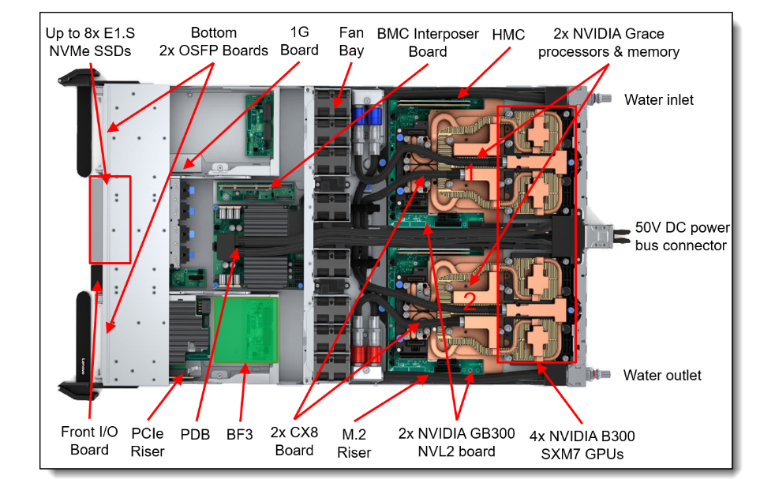
图 9 · 参照图 · Lenovo GB300 NVL2 托盘俯视 来源为公开标注示意图（由需求方提供），此处仅作对应关系分析的参照，非本项目产出。 右侧红框内是 4 颗 B300 SXM7 GPU 的冷板区，标号「1」「2」为两块 GB300 NVL2 板；进液 UQD 在后面板上方、出液 UQD 在后面板下方。
7.1 从照片能确认的事实
- 整托盘是单进单出的一个水路：后面板上一个进液 UQD、一个出液 UQD。按图 9 的方向，进液在后面板上方，出液在后面板下方。两者中间是 50 V 直流母排，干管不能占母排的连接器面。
- 液冷位共 6 个：4 颗 B300 SXM7 GPU + 2 颗 Grace。Grace 冷板连内存区一起盖住，外形比 GPU 冷板大。
- 两块 GB300 NVL2 上下分置，每块 = 1 Grace + 2 GPU。标号「1」靠进液侧，「2」靠出液侧。每块板上 Grace 靠风扇仓，两颗 GPU 靠后面板。
- 冷板之间靠外部管路串接：可见刚性铜管 U 形弯、金色波纹柔性金属管（做装配与热胀补偿）、以及带金属压接套的黑色增强软管用于较长距离转接。
- 托盘仍保留 Fan Bay，说明 NVMe、OSFP、PCIe Riser、BF3、CX8、PDB、BMC 与 1G 板等仍走风冷，不在这个液冷回路里。
7.2 流通 / 分流 / 汇集 / 回流原理
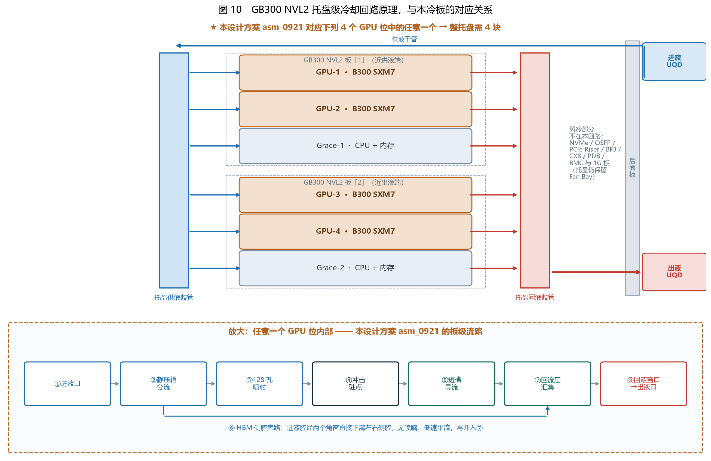
图 10 · 六路并联的水力拓扑 这张图只说明谁和谁并联，不表示冷板在托盘上的左右位置。 平面位置、50 V 母排让位、以及两套板内流道见图 11、图 12。 下半是任意一块 GPU 冷板内部：托盘把水送到进液口，板内再分到 128 个喷嘴。
按层级说清四个动作：
- 流通——冷却液由后面板上方的进液 UQD 进入托盘，沿供液干管送到托盘供液歧管；末端由出液 UQD 返回机柜二次侧。整托盘只有这一进一出，所有热量最终都从这一对接口带走。
- 分流（两级）——第一级在托盘：供液轨把水送到 6 个支路，4 块 GPU 各 2.0 L/min，2 块 Grace 各 0.55 L/min。Grace 通道本身只有约 0.7 kPa，入口孔板把该支路补到与 GPU 同一档，约 10 kPa，避免 Grace 把流量吸走。第二级在冷板内部：GPU 由静压箱分到 128 个喷嘴，另经两个角窗供 HBM 侧腔；Grace 由进液腔同时喂给 CPU 微通道和两侧内存槽。
- 汇集（两级）——板内：短槽出流与 HBM 侧腔平流先汇到整板回流层，经回液窗口进出液小腔；托盘级：各冷板的出液再汇入回液歧管。
- 回流——汇集后的热液经回液歧管、由后面板下方的出液 UQD 离开托盘。注意板内的"上抽回流"是压差驱动，与热浮力无关；托盘级同理，由二次侧泵提供压头。
7.3 用量与对应关系
若按整机柜推算，需再乘以机柜内的托盘数量；本报告不对机柜级数量下结论，因为托盘配置属机柜 OEM 口径。
7.4 本方案与照片中实物方案的差异
| 维度 | 照片中的实物方案 | 本方案 asm_0921 | 差异影响 |
|---|---|---|---|
| 覆盖对象 | 每块 GPU 冷板盖一颗 B300；Grace 另有更大的专用冷板并覆盖内存区 | 一块盖一颗 B300（双 die + 八 HBM） | 一致。Grace 需另行设计，不能沿用本方案 |
| 冷板构造 | 铜板加上外部刚性铜管和黑色软管，冷板之间可见跳接 | GPU 为三层铜射流板，Grace 为两层铜微通道板。板内完成配液；板外只留后面板走廊里的供回轨和接头软管 | 漏点收在接头软管上。内部隔断焊死后不可拆，送样阶段仍用第 6 节的螺接方案把流道测清楚 |
| 对外接口 | 冷板侧边接铜管或软管，托盘经后面板 UQD 对外。进液、出液分居后面板两端，中间是 50 V 母排 | STEP 里仍只有侧壁扁缝。设计补上：扁缝经铜转接块收到内径 6 mm 支管，再汇入内径 12 mm 的供回轨 | 转接块和盖顶回液槽还没有进 asm_0921.stp。轨的位置已经按母排让位排好，见第 8 节 |
| 分流层级 | 主要靠托盘歧管与外部管路分配；板内分流细节照片不可见 | 板内自带双腔静压箱 + 128 孔 + 角窗旁路 | 本方案对托盘管路的均流能力依赖更低，但对自身静压箱设计要求更高（腔做小了近进液口的孔会抢水） |
| HBM 处理 | 照片无法分辨是否对 HBM 区做了差异化处理 | 明确分区：GPU 区射流强化、HBM 区无喷嘴低速平流、中间隔离肋做水力隔墙 | 本方案的分区是有意设计，需靠 CFD 与 TTV 证明其收益 |
| 换热机理 | 照片看不出是否为射流冲击，不做推测 | 微射流冲击 + 短槽就地排液 | 缺乏同口径对比基准，本方案的优劣不能靠看图得出，必须用相同边界条件的 CFD 或实测台对比 |
| 厚度 | 未知 | 三层合计 12.5 mm | 需核对 SXM7 压装高度与托盘净空，确认 12.5 mm 装得进去 |
8. 按联想俯视布置的托盘水路
图 9 把托盘的前后和六个液冷位定下来了。本节在这个位置上，把 asm_0921 的射流流道和 CP-GRACE-MC-01 的微通道接成同一对供回轨。 冷板外形用设计包络：GPU 95 × 75 × 12.5 mm，Grace 200 × 120 × 8.0 mm。风冷区只保留图 9 上的名称和上下分区，那些方块不是机箱实测坐标。
8.1 从原图带进来的约束
- 视角与图 9 相同：左是托盘前部，右是后面板。进液 UQD 在后面板上方，出液 UQD 在后面板下方，50 V 母排在两者中间。
- 风冷区到风扇仓为止。NVMe、Front I/O、PCIe、OSFP、1G、PDB、BF3、CX8、M.2、BMC、HMC 不进这路水。
- 两块 NVL2 上下分置。每块板上 Grace 靠风扇仓，两颗 B300 靠后面板。板 1 靠进液侧，板 2 靠出液侧。
- GPU 冷板长轴（95 mm，双 die）沿机箱宽度，短轴（75 mm，流向）沿进深，进液边朝后面板。四块同向。转 180° 会让射流孔离开 die。
- Grace 冷板 200 mm 的一边沿机箱宽度，盖住后面两颗 GPU 的跨度；120 mm 的一边沿进深。进液腔朝 GPU，出液腔朝风扇仓。CPU 微通道和两侧内存槽都从进液腔吃水。
- SXM7 的螺孔、压装点和 NVLink 在哪一条边，公开资料没有。接头放在短边中部，避开长轴两端的 HBM 列。
8.2 六路并联的数量
工质按 40 °C 的水：密度 992 kg/m³，比热 4179 J/kg·K。这组物性和 Grace 冷板报告相同。流量是设计值，温升由功率和流量直接算出。
| 支路 | 数量 | 功率 | 流量 | 流体温升 | 支路压降 | 支管 |
|---|---|---|---|---|---|---|
| B300 · asm_0921 射流 | 4 | 1100 W | 2.0 L/min | 8.0 K | 设计档约 10 kPa，由射流孔和板内流道承担 | 内径 6 mm，约 1.2 m/s |
| Grace · CP-GRACE-MC-01 微通道 | 2 | 300 W，含内存 | 0.55 L/min | 7.9 K | 通道约 0.7 kPa；入口 4×Ø1.04 mm 孔板补到支路约 10 kPa | 内径 6 mm，约 0.3 m/s |
| 托盘合计 | 6 | 5000 W | 9.1 L/min | 8.0 K | 干管速度头不到 1 kPa，分流由支路压降决定 | 供回轨内径 12 mm，约 1.3 m/s |
六路的支路压降都落在约 10 kPa。Grace 的通道若直接并到 GPU 支路上，会把水吸走，所以孔板做在 Grace 的进液接头里，送样用可换镶件。孔板直径沿用 Grace 报告的配平计算，托盘实测后再冻结。
四颗 GPU 若以 2.0 L/min 串成一串，每颗把水温抬高约 8 K，末颗进液大约再高 24 K。若串联回路的总流量仍是 8 L/min，单板流量变为 8 L/min，射流孔压降按速度平方大约增到 16 倍。128 孔是按 2.0 L/min 开的，这两条边界都要改孔或改热设计点。照片上看不清管内是哪一种，本方案按并联出图，ICD 下来后再核对。
8.3 整托盘的供回轨
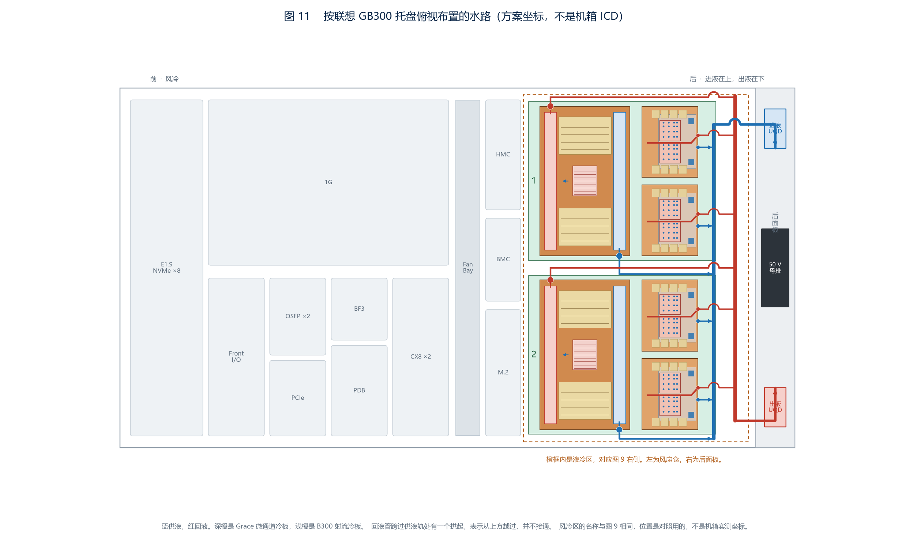
图 11 · 与图 9 同一视角的水路。 橙框是液冷区。深橙是 Grace，浅橙是 B300。蓝是供液，红是回液。供液轨靠近冷板，回液轨靠近后面板，都在 GPU 后缘和后面板之间的走廊里，不占用 50 V 母排的连接器面。 回液短管在平面上要越过供液轨，图上的拱起表示从上方过去，两管不接通。 风冷区的名称和图 9 一致，方块位置只作对照。
- 供液：进液 UQD 转弯进入供液轨。四块 GPU 各用一根短管从后缘中部接入进液转接块。上板 Grace 的进液从中缝接到供液轨，下板 Grace 的进液沿机箱下沿接到供液轨。
- 回液：四块 GPU 的盖顶回液在后缘与进液口并排接出，越过供液轨后进入回液轨。上板 Grace 的出液沿机箱上沿回到回液轨，下板 Grace 的出液从中缝回到回液轨。回液轨在下方转弯进入出液 UQD。
- 软管只留在接头上。每处转接留一段软管，吸收装配偏差和热膨胀，对应照片里的黑色软管。走廊里的两根轨用刚性铜管。
- 过滤仍看最小的孔。回路里最小的通流是 GPU 的 0.50 mm 射流孔，过滤按 ≤ 25 μm。Grace 的 1.04 mm 孔板比它大。
8.4 一块 NVL2 上的两套流道
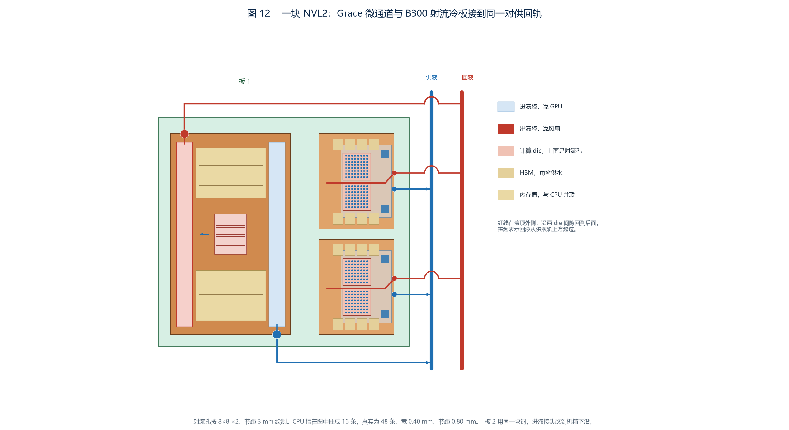
图 12 · 板 1，芯片面朝下。 左侧 Grace：蓝条是靠 GPU 的进液腔，红条是靠风扇仓的出液腔，中间横线是 CPU 微通道和两侧内存槽，流向从右到左。图中 CPU 槽作了抽稀，真实为 48 条、宽 0.40 mm、节距 0.80 mm。 右侧两块 B300：蓝点是 STEP 里的 128 个射流孔，两片 8×8，节距 3 mm，盖住两颗 die。红线画在盖板顶面外侧，沿两颗 die 的间隙回到后面板，和盖板内部的静压箱隔着一层铜。金色小块是 HBM，靠后面的蓝块是角窗，侧腔走低速平流。
- GPU 板内：扁缝进液 → 静压箱 → 128 孔冲击余铜顶面 → 72 条短槽把废液带离驻点 → 两侧角窗给 HBM 侧腔 → 整板回流层 → 盖顶回液槽回到进液边。回液槽在 COVER2 的顶面外侧，只在板后的供回轨上和进液汇合。
- Grace 板内：进液接头经孔板进入靠 GPU 的进液腔，CPU 区 48 条微通道和两侧内存宽槽并联，汇入靠风扇仓的出液腔，从另一侧接头离开。内存入口有限流缝，使内存合计约 0.08 L/min、CPU 约 0.47 L/min。
- 铜板只做一种手性。两块 Grace 在机箱里同向摆放：进液接头都在图的下边，出液接头都在图的上边。上板的下边是两板之间的中缝，下板的下边是机箱下沿。孔板镶件装在实际接供液的那个接头里。
- 管子不从 GPU 顶面上跨过。GPU 自己的回液在两颗 die 的间隙里。Grace 的管子走中缝、上沿和下沿。
8.5 堆高，以及还没有写进 STEP 的特征
die 正上方仍是冷板本体的 12.5 mm。盖顶回液槽只占两颗 die 的间隙，大约再高 6 mm，不压在 die 心上。内径 6 mm 的圆管从板的后缘才开始，落在冷板轮廓之后的走廊里。Grace 本体 8.0 mm，侧向接头的管子在板的侧面，不叠到 GPU 上。
asm_0921.stp 特征的部分：进液转接块、盖顶回液槽、供回轨、软管和 Grace 冷板。
可以先冻结的是方向：GPU 进液边朝后面板，Grace 进液腔朝 GPU，接头避开 HBM 列，轨让开 50 V 母排。9. 待确认项
| # | 事项 | 现状 | 建议 |
|---|---|---|---|
| 1 | 材质冻结 | STEP 为 AP203，不带材料属性，文件里只有一条显示颜色 | 在图纸/PMI 中正式写入紫铜牌号与状态，并明确三件同材 |
| 2 | TIM 与流体未建模 | 装配内只有三个铜零件；PLATE 底面的浅腔是 TIM 与器件让位面 | 若要做共轭传热仿真，需另行建出 TIM 层实体，并抽取铜间空腔作为流体域 |
| 3 | 装配方案未体现在几何上 | 当前三件只有互锁面，既无密封圈槽也无螺栓孔，亦无钎料阻流槽 | 装配方案一旦选定（见第 6 节），需回到 CAD 补出相应特征，否则无法投产 |
| 4 | 进出液接口形式 | 盖板侧壁只有扁缝。第 8 节已规定转接块、盖顶回液槽和内径 12 mm 供回轨，这些还不是 STEP 特征 | 方向可以先冻结。净空确认后，把转接块和回液槽补进 GPU 冷板模型 |
| 5 | 公差与表面要求 | AP203 不含公差与 PMI | 至少需明确：贴芯片面的平面度与粗糙度、三层对位精度、微孔孔径公差 |
| 6 | 流量分配与压降 | 本报告只给几何拓扑，未做定量 | 由 CFD 与实件流阻标定闭合；重点核对 GPU 区与 HBM 侧腔的分流比 |
| 7 | 托盘水力拓扑 | 照片能确认单进单出、6 个液冷位和 50 V 母排的位置。管内串并联看不清。本方案按六路并联、9.1 L/min 设计 | 向托盘方索要水力 ICD。若为串联，按第 8.2 节重算末级进液温度和射流孔压降 |
| 8 | 单板流量与进液温度 | 设计点取 GPU 2.0 L/min、Grace 0.55 L/min、进液 40 °C。这是冷板口径，不是托盘实测分配 | 拿到托盘流量分配后，只改 Grace 孔板直径；GPU 开孔保持 128 × 0.50 mm，除非单板流量明显偏离 2.0 L/min |
| 9 | 装配净空 | die 上方 12.5 mm；两 die 间隙上的回液槽另加约 6 mm；圆管在板后走廊 | 核对 SXM7 压装高度，以及走廊能否放下内径 12 mm 的两根轨和 50 V 母排 |
| 10 | Grace 冷板 | 托盘水路已按 CP-GRACE-MC-01 接入。铜板几何不在本 STEP 内，平面 200 × 120 mm 仍是候选 | 见 design/NVIDIA_Grace_GB300_冷板详细设计报告_v1.0_20260926.html。盖板图到达后只替换窗口，不改托盘的并联和孔板角色 |
asm_0921.stp 实测出三个零件的结构、层间互锁和板内流路；并按联想俯视把四块射流冷板和两块 Grace 微通道冷板收成一套六路并联水路。
没做——托盘尺寸的实测、串并联的 ICD 确认、以及加工与装配的实件验证。第 8 节的温升是由流量和功率算出的，板内压降仍是设计档，不是实测。